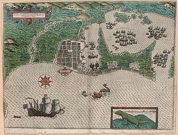
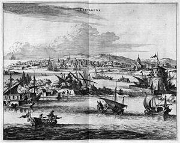
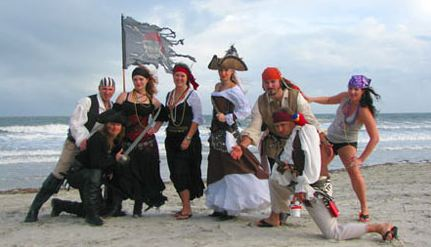
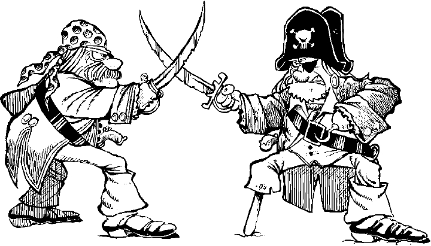

My name is Admiral Nedward von Dumpling, and this is my story. For more information about me, please refer to the following:
 In 1681 I plundered my first town, Port Royal. At the time it was governed by the French.
In 1681 I plundered my first town, Port Royal. At the time it was governed by the French.
The town's people were sick of French rule, and after we expelled the governor and did our obligatory search for treasure, the people welcomed us with open arms. We danced and drank rum all night.

After setting sail from Port Royal, I soon learned that an old nemesis, Baron von Shoppybag, had kidnapped my long lost brother Jarvis Firebird.

We hailed a nearby Spanish War Galleon and asked for information. They told me that the Baron was last seen near Cartegena.
A great battle ensued, and though I emerged victorious, many lives were lost and Baron von Shoppybag had fled.
Baron von Shoppybag had escaped, and if I didn't catch up with him soon, he might be lost forever. While enjoying a flagon of ale one evening at a pub in Barbuda, a one legged stranger approached me and offered to tell me the Baron's whereabouts in exchange for a jeweled scepter I once found while plundering the Spanish Armada. I agreed. The man told me von Shoppybag could be found off the coast of San Juan.

I set sail immediately for San Juan, and sure enough, I found von Shoppybag's ship, The Baggie Session, hanging around the port. Wasting no time, I began firing my cannons.

His hull breached and his ship started to sink, but I wouldn't let him escape again. I boarded his ship and confronted him. I pulled my cutlass from its scabbard and we proceeded to duel. He was an aggressive fencer, but I deftly feinted and parried all of his advances.

I finally wore him down and knocked his sword away. I demanded to know where my long lost brother Jarvis Firebird was. von Shoppybag just cackled and looked my in the eye. He informed me that he was merely a pawn in a larger game - a game being orchestrated by my Archenemy, Marquis de la Montalban. I cursed to Kanaloa and Njord and Poseidon and any God that might hear me. Marquis de la Montalban was a fiend, but he was a worthy adversary.

Before von Shoppybag went to sleep with the fishes, he told me that Marquis de la Montalban was travelling in a fleet with large number of Spanish Frigates, Barques, and Merchantmen. He was currently hiding out in Santo Domingo, where he would undoubtebly be protected by a number of Spanish Privateers.

We set sail for Santo Domingo. As we got close, the crew wanted to blow off a little steam so we decided to do a silly crew picture on a nearby beach.
There were too many Spanish ships and troops in the port, so we would have to be sneaky. We anchored the H.M.S. Floatyboat about a few miles up the coast from Santo Domingo. I then led a small clandestine unit into the city.

Marquis de la Montalban must have figured out I was coming for him, because he started to run away just as we entered the city. I followed after him, and finally caught up to him in the courtyard upon a hill. This would be the stage of our final battle.


The duel lasted 14 hours. Neither of us was willing to relent. Despite shooting pains throughout my body from the hunger and the thirst, around hour 15 I finally managed to subdue this scallywag. He begged for his life - I told him I'd consider it if he revealed the whereabouts of my long lost brother Jarvis Firebird. He gave me a location in Petit-Goave, not too far from where we were fighting. Despite his help, I decided the world would be better off without Marquis de la Montalban. Marquis de la Montalban is the wooooooooooooooooooooooooorst.
After getting back to my ship, we pulled up anchor and headed for Petit Goave.

It was eerie and quiet, but we headed into town anyway. It wasn't long before a man directed us toward an inn where a stranger was staying. We walked in, and sitting there at the bar was none other than my long lost brother, Jarvis Firebird. The crew was back together again!